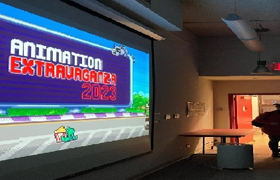

New York City College Of Technology Communication Design B.F.A. The BFA degree develops students' abilities to frame, research and solve increasingly complex visual communication problems. Students develop a professional portfolio that prepares them for employment as art directors, graphic designers, illustrators and web designers.
Queens College Design B.F.A. Queens College's Design program combines knowledgeable faculty with industry standard software and the creativity of a studio-based learning environment. Students choose one of three concentrations: Communication Design, Animation & Illustration or Interaction Design.
The City College of New York Electronic Design and Multimedia B.F.A. The Electronic Design & Multimedia prepares students for careers in design in traditional print and emerging electronic media. It offers one of the most comprehensive, affordable 4-year programs in electronic art at a New York City public university, and has a 18-year record of alumni success.sc
York College Communications Technology B.S. An interdisciplinary program that brings together television, web, information systems, computer science, and design. The program offers three main concentrations: digital video, computer graphics, and systems and applications.
Lehman College Computer Graphics and Imaging B.S. The Computer Graphics and Imaging program offers courses covering web design, imaging, 3-D modeling, animation, interactivity, and broadcast design, preparing students for careers as well as graduate study in these fields.
Baruch College Graphic Communication B.A. The graphic communication specialization provides training in graphics as well as basic training in the broader aspects of business communication. It prepares the graphic artist to enter a business environment.